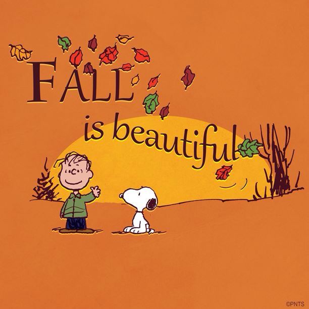
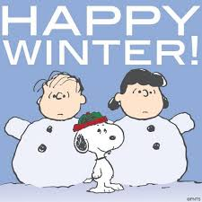
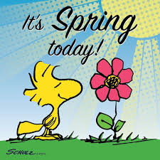
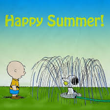

FALLING IN LOVE WITH FALL
Fall is a time to rejoice the cycle of life coming to an end in nature
and the anticipation of new life. Leaves fall with the hope of new ones
soon to take their place. The weather is cool and comfortable. The type
of weather to be able to blissfully work in the yard trimming trees, raking
leaves, and doing minor repairs to the exterior of the house. You chat with
the neighbors as you lean on your rake. You are comfortable - neither too
hot or too cold. You take a walk and feel the crunch of leaves under your
sneakers. You contemplate if the coming winter will be a bad or mild one
but for now you enjoy the coolness of the air and the wonderful autumn
colors surrounding you.

LOVING THE WINTER BLUES
Winter is a time to hunker down indoors
with hot chocolate and ginger snaps in front of a roaring fireplace
with frends and family. But, at some point, we have to leave the warmth
our homes and venture outside to shovel out our vehicles and shovel paths
to the street and to the mailbox. Our arms ache, our cheeks are cold, our
mittens get wet and we long for the spring. Then we see our dog frolicking
in the snow and our children building a snow fort and we remember what
we love about winter - the pureness of the snow, the romping in the snow,
the quietness and cleanliness of the new fallen snow, the crispness in
the air. And, all of sudden, thoughts of moving to Florida are gone
and you make a snowball and throw it at your neighbor.

A SPRING IN MY STEP FOR SPRING
Spring is here and everything is alive with new growth.
Spring is here. The days are growing longer. Spring jackets substitute for winter coats. Away
with gloves, mittens, earmuffs, hats and bulky sweaters. We are reborn. Look
around - the flowers are bursting through the ground, the trees are budding,
the grass is greener. The lawnmower needs a tune up. Trips to the nursery become
a weekly ritual. Checking out vegetable seeds online. Walks become longer as
the air is pleasant and the sun is warm. Spring has arrived in all its glory.
Looking forward to experiencing nature's new beginnings.

SUMMERTIME ROMANCE
Summer is finally here! Opening the pool,
heading to the beach, hiking and camping in the woods, sitting in the
sun reading a book, working the garden, lazing around with the dog,
eating ice cream and lobster rolls, welcoming the cool breezes of the
night and basking in the warmth of the sun are all favorite Summer
activities. The long days of the summer quickly pass by and soon it will
be time to leave it all behind as Fall moves in and the cycle of life
begins once again. But for a short 2-3 months the outdoors can be totally
enjoyed without needing a jacket. Be sure to wear sunglasses to protect
eyes and apply sunscreen lotion as needed. The sun can be a dangerous
beast and should be respected.
SEASON SUMMARY
- FALL - Love the diversity of colors on the trees.
- WINTER - Love the freshly fallen snow.
- SPRING - Love seeing the new growth.
- SUMMER - Love the strong warm sun.
CONCLUSION
The best of all the four seasons is FALL.
Fall does not signify the end of life in nature; it signifies the order
of life in nature and the promise of a new beginning. Fall strengthens
us to prepare for winter and gives us hope that new beginnings will
always return. It's the cycle of life.